AutoRSE：推荐工程 Agent 能把模型改到哪里
AutoRSE 的英文原题为 AutoRSE: Evaluating LLM Agents as Recommendation Engineers for Self-Evolving Recommender Systems，由中国科学技术大学 Rui Tian、Yi Fang 等作者提出，新加坡国立大学参与合作。论文于 2026 年 10 月 27 日 UTC 公开，本笔记于 10 月 29 日阅读核验，唯一论文入口为 arXiv:2610.37228。作者给出的代码仓库本轮访问为 HTTP 200，但没有重新运行作者的训练、Agent 实验或排行榜。文章的核心产物是评估协议和实证分析，不是一种新的推荐模型。
推荐工程 Agent 缺少统一、标准化的评估框架与系统性的轨迹分析，因此其能力边界仍不清楚。即使最终推荐指标提高，也需要进一步判断这些收益来自参数、训练与集成调整，还是来自真正的算法改进。
1. 背景和问题
推荐模型迭代往往包含一连串紧密相连的工作：理解数据和已有实现、提出修改假设、编辑代码、训练与验证、分析结果、保留或撤销改动。通用编码 Agent 已经可以覆盖其中许多操作，但“完整执行过流程”与“找到了有价值的研究方向”是两个问题。推荐任务又比普通代码修复更难即时验收：程序能够运行，只说明实现没有明显崩溃；验证分数略升，也可能来自随机性、过度调参或对某个验证切片的适配。AutoRSE 希望把这些能力拆开观察，而不是从一次成功演示直接推断 Agent 已能自主研究推荐算法。
论文讨论的推荐工程 Agent，以一个可编辑的初始推荐系统为起点，不断在固定数据和资源约束内修改策略。这里的策略包括模型、训练、特征与预测组合，不限于网络结构。对实际推荐研发来说，这种宽定义有意义，因为训练日程、正则、候选分布和模型集成都可能带来真实改进；但它也引出归因难题：如果 Agent 主要在现成配置里寻找更好的组合，最终提升究竟说明了算法研究能力，还是说明它擅长工程搜索？这不是否定调参价值，而是要求收益与能力表述对应。
已有工业 Agent 系统多在各自私有链路展示效果，环境、资源、基线和验收目标很难逐一对齐。某系统可以使用生产统计与外部知识，另一个只能访问给定代码；某系统优化训练速度，另一个优化排序质量。只比较各自报告的提升容易把基线成熟度、数据规模和工具权限差异算进模型能力。AutoRSE 的切入点是统一可执行接口：同样提供任务描述、起始代码、公开训练验证数据、隐藏测试和单卡预算，再比较不同模型及其执行框架。这使“在哪些条件下提高了指标”成为可检查的问题。
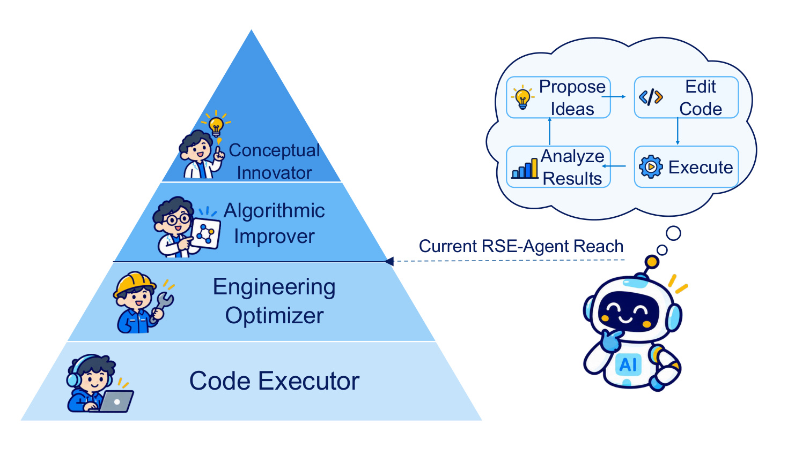
Figure 1 用金字塔把能力分为代码执行、工程优化、算法改进和概念创新四层。底层意味着能实现并运行既定方案，中间层意味着能调整已有系统的配置与训练方式，更高层则要求对特征、架构、目标或问题定义作出有机制意义的改变。右侧循环包含提出想法、改代码、执行和分析结果，说明仅仅拥有这四步外观，并不能确定系统处在哪一层。作者将当前推荐 Agent 的主要活动定位在工程优化附近，这个定位是后续轨迹分类与评分支持的分析判断，不是图中某个独立测量仪器给出的能力值。
读图时尤其要区分“改变了结构”与“在文献意义上创新”。把标准模块接到基线，可能对当前代码构成较大变化，却仍是已有技术的使用；相反，小范围特征改造也可能恰好针对模型的关键瓶颈。图没有给出各层的统一距离，也没有证明每个高层方案一定获得更高指标。它的作用是建立评估语言：后面既看最终测试分数，也看实际尝试过的优化种类和最终采用方案的变化程度。将金字塔当成所有研究能力的严格全序，会超出论文证据。
推荐任务内部也不是同质的。HSTU 处理行为序列，TIGER 生成语义 ID，IntSR 联合搜索和推荐，WuKong 与 RankMixer 侧重特征交互，OneTrans 统一序列与非序列建模。这些模型的剩余可优化空间不同，验证指标也不同。一个起点 NDCG 较低的生成模型，可能因为训练配方尚未充分优化而获得很大的相对提升；已经接近上界的 AUC 则很难出现相同比例。因此本文的总体平均适合描述给定任务集合上的工程表现，不适合直接给所有推荐场景排出通用能力榜。
另一个背景是研究过程存在机会成本。固定十二小时并不等于固定实验数：有些改动训练更慢，有些只需要复用检查点，有些集成会显著扩大服务成本。Agent 选择容易快速得到正反馈的方向，可能是预算下的合理行为，也可能使它持续回避高风险但有潜力的机制修改。论文统计尝试分布，正是为了看最终分数背后研究时间怎样被组织；不过动作数量与时间占比并不相同，后文不能将大比例集成操作直接翻译为大比例 GPU 计算或大比例最终收益。
本文第三个问题是外部想法的作用。若 Agent 能准确实现别人提出的有效方向，却很少自行产生类似方向，那么实现能力和研究立意能力就应分别评估。作者通过给定创意库进行干预，同时增加一个显式自生成想法的对照。这个设计比单看最终分数更接近能力诊断，但外部想法本身携带额外信息，不能把结果写成“多思考几次就必然提升”。本笔记因此把它看作知识条件变化下的受控比较，而不把外部指导后的成功归入无辅助的自主创新。
基线来源也影响问题难度。附录说明，部分模型按官方实现复现，部分依赖社区实现并迁移到公开数据，IntSR 则因缺乏公开代码而基于原文与 UniSAR 做尽力复现。作者验证了训练收敛和指标合理性，但这与恢复原工业部署的全部优化细节不同。阅读所有后续收益时，都需要记住 Agent 改进的是本文提供的可执行基线，而不是完整生产系统的最终能力上限。
协议还刻意把模型提交与聊天交付分开。Agent 不能通过提前写一段“已经取得进步”的总结结束研究，监督器会继续唤起同一会话；最后要提交能按规定测试输入产生预测的代码和结果。这个约束限制了只追求演示效果的行为，却也可能让已无好方向的系统继续产生低价值小改动，因而实验次数需要结合验证变化理解。任务内固定随机种子有助于让可比较训练使用同一随机条件，但三个独立研究运行仍可能因想法和执行选择不同而分叉。本文关心的正是这种外层研究不确定性，不能把底层训练可重放等同于整个 Agent 研究轨迹可稳定复现。
2. 方法
2.1 将推荐研发表述为代码状态迭代
原文把任务定义为四元组：任务说明、初始推荐代码、可用数据和计算预算。任务说明不仅给出推荐目标，还指定主评价指标和提交格式；初始代码包含完整模型与训练流程，而不是让 Agent 从零选择任意技术；数据包含训练、验证和无标签测试输入，测试真值仅留给最终验证器。这样设计的关键，是把可探索空间和最终验收边界同时固定下来。Agent 可以调整给定策略，但不能通过获取隐藏测试反馈来选择方案。
每次迭代遵循探索、构思、实现、实验和分析五阶段。探索读取当前实现和数据约束，构思提出可检验假设，实现把假设转成代码，实验产生训练与验证反馈，分析再决定保留、修改或放弃。原文使用下面的状态更新表达这个过程：
符号解释：$\pi_i$ 是第 $i$ 次迭代的推荐代码状态，$D$ 是允许使用的数据，$\operatorname{Feedback}$ 包括运行输出、错误和验证指标，$\operatorname{AgentUpdate}$ 表示 Agent 结合反馈作出的代码与策略更新。它不是梯度下降公式，也不是本文提出的新训练损失；更新内部仍可能调用常规模型训练。输入是当前可运行策略和反馈，输出是下一次策略状态，最后保留验证集选择的方案及其测试预测。
这样的任务表述将两类循环分开：推荐模型在训练数据上更新权重，Agent 在外层更新实验策略与实现。训练时 Agent 可以多次调用训练和验证程序；最终推理则运行其提交的预测管线，Agent 不必对每个用户请求重新进行研究循环。若最后采用多个检查点或多个模型集成，推理成本会跟着最终管线变化，因此“研发过程中同一张卡”不等于“部署时计算量与初始基线相同”。这一点在解释集成占比时尤其重要。
2.2 沙箱、预算与隐藏测试
每个实验在隔离容器中运行，具有一张 H200、十六个虚拟 CPU 和三十二 GB 系统内存，研究阶段限制为十二小时。Agent 可以检查和编辑文件、执行命令、安装依赖、训练与验证，但不能联网或调用外部搜索，也不能接触测试标签与测试评估反馈。若提前返回，监督器会要求继续使用剩余研究时间；接近期限时应保存当前最优有效提交，避免最后一个未完成实验覆盖已完成结果。附录还给出了固定种子、冻结想法计划、保存回滚身份和结束后台进程等执行约束。
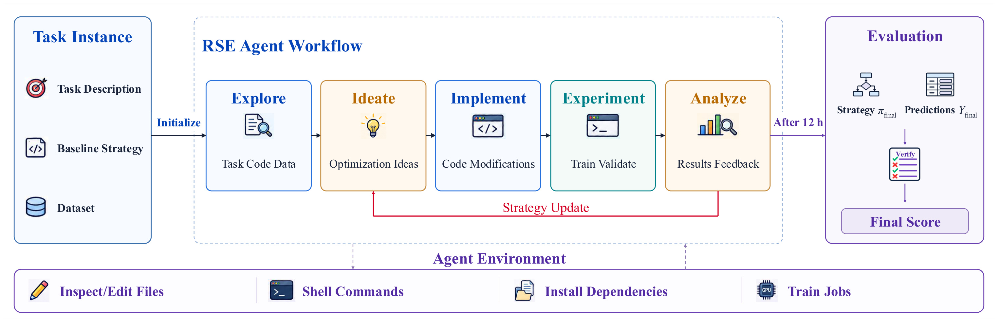
Figure 2 左侧是三个可见输入：任务、基线和数据。中间五个阶段围成策略更新循环，底部工具栏给出文件编辑、命令、依赖和训练任务四类执行能力，右侧独立评估模块接收最终策略与预测。箭头“十二小时后”标明最终提交发生在研究预算结束时，不意味着每次实验都能查看测试分数。图中反馈返回的是研究环境里的可见结果，而隐藏标签由验证器持有；如果把右侧最终分数错误接回中间循环，就破坏了本研究的关键数据隔离。
图还说明输出有两个层次：代码策略是可重放工件，预测是按固定样本顺序提交的实际结果。一个新实现即使在验证集表现不错，也必须满足提交格式和任务有效性约束才进入最终评估。对照初始策略，可以检查 Agent 最终究竟保留了哪些修改，而不是依据它在对话里声称做过什么。这个设计也为后文创新评分提供证据：实际参与预测的代码差异才算最终方案，放弃的试验不能增加最终创新得分。图没有表示在线流量、生产约束或长期用户反馈，因此不能由此推断已经验证部署收益。
论文同时报告原始任务分数与相对改进，原文公式为：
符号解释：$M$ 是任务指定指标，$\widehat Y_{\mathrm{final}}$ 是最终 Agent 预测，$Y_{\mathrm{test}}$ 是隐藏测试真值，$Y_0$ 是初始基线预测，两个 $S$ 分别表示相同协议下测试分数，$\Delta_{\mathrm{rel}}$ 是相对基线的百分比变化。分母是各自任务的基线分数，不是指标剩余误差，也不是基线与理想上界的差距。跨任务平均这些相对变化能形成摘要，但不能把 NDCG 和 AUC 的绝对变化直接相加，也不能将百分比写成百分点。
2.3 用轨迹分类解释改进来自哪里
轨迹分析先定位启动训练或评价的工具调用，把其前后的代码修改、命令与输出关联为实验记录。普通读取和失败工具调用等无信息操作被过滤，后台执行结果也需要重新接回对应动作。随后使用 LLM 判断每个实验属于参数调整、模型集成、训练策略、特征建模、模型架构或目标函数六类；前三类归为工程优化，后三类归为算法创新。这个划分是本文研究协议，某个修改跨多类时仍存在标注歧义，不能理解为自然界唯一的分类标准。
最终方案另以零到四级打分，关注它相对初始代码改变了什么。零级为常规调整，一级为既有组件重组，二级为加入标准现成组件，三级为新机制与已有组件的非平凡混合，四级为表示、目标、模态或任务层面显著改变。附录要求评审查看实际运行代码差异及最终命令，不看测试分数，不凭修改行数或未执行声明判断；证据不足可以暂不评分。这里测量的是相对基线的新颖变化，而不是相对整个文献库的绝对原创性。
正文称每次使用三个 LLM 评审并平均，实施细节又说明轨迹与创新评分使用 DeepSeek V4 Flash，附录模板则说重复评分由外部汇总处理。可确认的是有重复判分和评分规则，不能据此确定三种不同模型组成独立专家组。创新等级原本是序数尺度，取均值与计算相关系数是作者的统计处理，不表示等级二到三与三到四具有已验证的同等能力差。方法部分没有新的推荐损失或神经网络模块，其核心贡献是可执行评估协议及对研究过程的证据整理。
3. 实验结果
3.1 任务、数据与比较设置
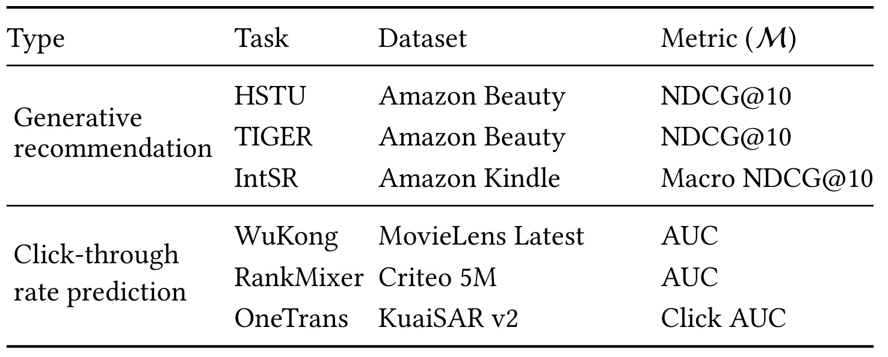
Table 1 上半部分是三种生成推荐任务：HSTU 与 TIGER 在 Amazon Beauty 上报告 NDCG@10，IntSR 在 Amazon Kindle 上报告搜索推荐的宏平均 NDCG@10；下半部分是 CTR 任务，WuKong 使用 MovieLens Latest，RankMixer 使用 Criteo 5M，OneTrans 使用 KuaiSAR v2，主指标为 AUC。它们覆盖不同建模方式，但不是六个互不相关的工业在线系统。HSTU 与 TIGER共享同一数据域，部分模型经过公开数据迁移，因此结果外推还受到数据重叠和实现来源限制。
附录给出 Beauty 约二万二千名用户、一万二千件物品并按时间切分；Kindle 使用一百候选的搜索推荐设置；KuaiSAR 测试约一百四十六万样本，Criteo 按四百万、五十万、五十万划分训练验证测试。理解候选空间很重要：一百候选任务的 NDCG 与全物品生成推荐的 NDCG，纵然名称相同，也不是直接可比的召回难度。作者对官方、社区与尽力独立复现采用不同路径，尤其 IntSR 依赖 UniSAR 改造，性能增益应归属于这里提供的具体实现。
比较涉及三种语言模型与三个执行框架；因接口限制，两个组合未纳入，实际为七种组合。每任务每组合运行三次，主表报告均值与标准差。相同十二小时资源为研究过程提供可比约束，但没有统一语言模型的 token 费用，也没有固定最终模型数量、服务延迟或实验次数。本轮只核验论文和已有开源入口，没有运行这批约一百二十六次基础研究试验，也没有核实排行榜未来变化。
3.2 主结果与负迁移
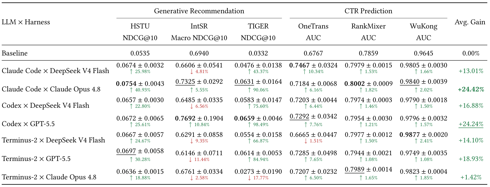
Table 2 的每行是一种语言模型与框架组合，每列给出一个任务原始分数及相对初始基线的变化，最右列是六任务相对变化的无权重平均。四十二个组合任务设置中三十五个高于基线，作者汇总平均约百分之十六点一。最强两行分别为 Claude 原生框架配其模型的百分之二十四点四二，以及 Codex 配 GPT 的百分之二十四点二四。两个平均接近，不意味着所有任务都接近，也没有给出统计检验支持二者精确排名；三次重复规模尤其不足以消除复杂任务的大方差。
一个明显例子是 TIGER：初始 NDCG 为零点零三三二，Codex 配 GPT 达到零点零六五九，论文表列相对提高百分之九十八点四九。这是小基线分母下的相对变化，绝对差为零点零三二七，不能写成准确率提高九十八个百分点。另一端 WuKong 初始 AUC 已达零点九六四五，多个组合相对提升约百分之一至二点四；这不代表它对业务更不重要，也不说明其算法问题更容易解决。各任务饱和度与指标形态不同，作者给出的生成推荐平均百分之二十九点二和 CTR 平均百分之三点一应按这个背景理解。
最需要保留的负例是 IntSR：七种组合中五种低于初始零点六九四零，最弱约负百分之十一点四四。Codex 配 GPT 的均值虽为零点七六九二，标准差却达零点一九零四，说明不同研究运行结果相当分散。另一个负例是 Terminus 配 Claude 在 TIGER 上下降百分之十七点七七，并且标准差较大。论文把这些情况与多任务优化不平衡、验证过拟合及框架适配联系起来，但没有独立控制这些因素逐项确定因果，稳妥结论是现有 Agent 不能保证跨任务稳定改进。
同一个模型换框架，平均收益会显著变化。Claude 在原生框架中的平均百分之二十四点四二，换到 Terminus 后仅百分之一点四二；但这不是一个只改变界面变量的纯粹模型能力实验，工具封装、提示、上下文管理和操作习惯都可能变化。主表支持把语言模型和执行框架作为整体评估，不能据此推导某个模型在所有第三方框架上都必然失败。实际选型还需用自己的代码和训练时长做复验。
3.3 优化轨迹与策略分布
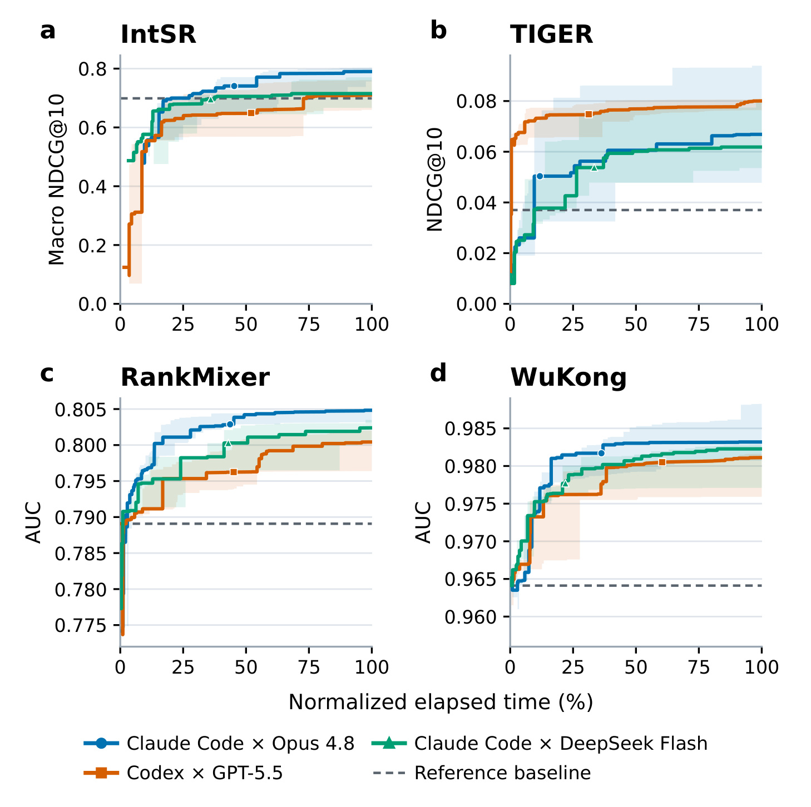
Figure 3 横轴是十二小时研究预算的归一化进度，纵轴分别是任务验证指标；实线是三次运行中位数，阴影是最小到最大范围，虚线为初始基线。作者观察到许多收益在前四分之一预算出现，大部分改进在一半时间前获得，之后平台期明显。这里画的是历史最优验证分数，天然不会因后续坏实验而下降，因此平坦既可能表示没有好新想法，也可能表示尝试了很多失败方向。它不是当前模型质量的实时曲线，更不是每一时刻都在隐藏测试集上重复查询。
IntSR 的三条验证轨迹与主表最终测试结果提醒我们，研究过程中选择得更好不必然泛化更好。TIGER 与 WuKong 的阴影跨度说明相同组合不同种子仍会进入不同收益平台；单看一条漂亮曲线容易高估稳定性。论文将平台期解释为十二小时足够产生有意义迭代，这是给定初始实现与任务下的经验结论，不能推出其他模型、数据规模或更长训练任务也应在十二小时结束。为了复用这个评估方式，最好同时保留最后有效提交、验证选择记录和测试一次性验收，而不以曲线形状取代这些工件。
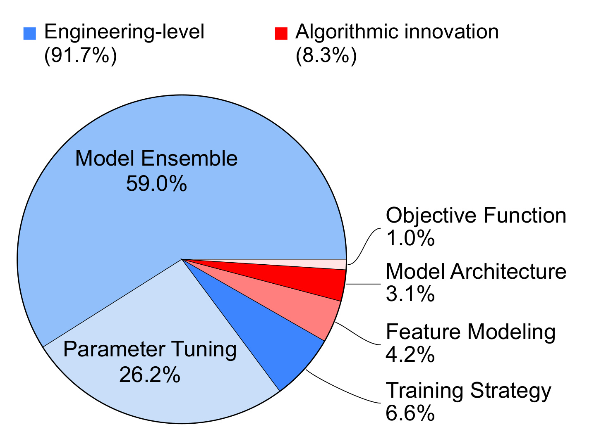
Figure 4 汇总四千四百二十五个切分实验：模型集成百分之五十九，参数调整百分之二十六点二，训练策略百分之六点六；特征建模、架构和目标函数分别为百分之四点二、三点一和一点零。前三类相加约百分之九十一点七，后三类约百分之八点三。图中的分母是被切分并分类的实验记录，不是全部工具调用、GPU 时间、最终保留修改或最终指标收益。一个集成权重搜索可以产生多条记录，一个复杂架构实验可能只产生一条，二者不能按次数直接比较研究投入。
这张饼图仍提供有价值的行为证据：在允许改模型与训练流程的开放空间里，Agent 多数选择了既有方案的调配，目标函数探索特别少。但“工程优化占多数”不等于这些操作无用，也不意味着百分之八点三的操作贡献了全部真正有效的提升。分类还依赖 LLM 对修改上下文的理解，边界性的特征变换、标准模块加入和架构调整可能被不同评审归到不同类别。若要从比例进一步推断研究瓶颈，需要人工抽样检查分类一致性，并把每类实验的成功率、耗时和最终贡献单独量化。
3.4 创新评分、相关性与想法注入
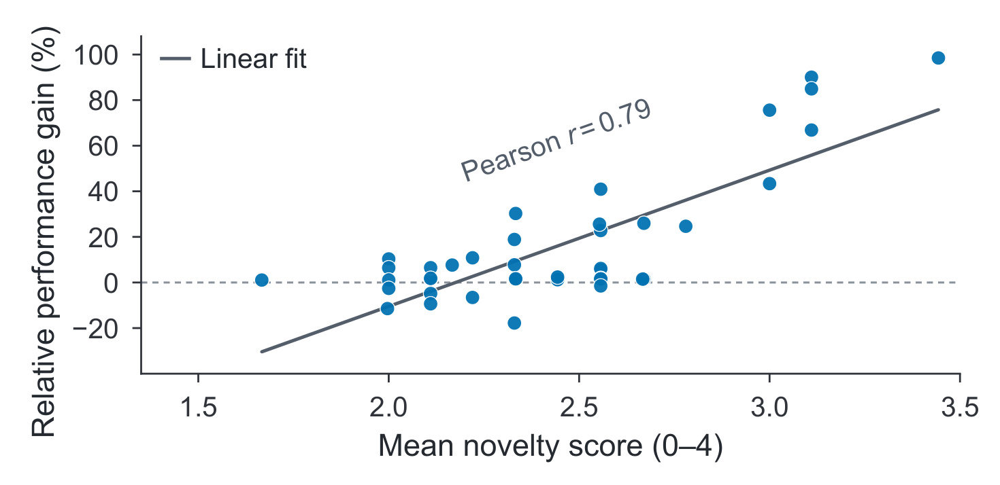
Figure 5 每个点对应一个任务与 Agent 组合的平均创新评分和平均相对测试收益。横轴是零到四级评分的平均值，纵轴是相对变化，拟合得到 Pearson 相关系数零点七九；总体创新评分均值为二点四二。结果表明，给定这些任务与实现，更大幅度改变基线的方案常伴随更高收益。但点混合了不同任务基线分母、不同模型框架与不同可改空间，相关性不能识别“主动提高新颖程度”本身的因果效应，也不能排除特征信息更充分同时带来新颖评分和收益。
原文的评分规则要求不看测试收益、只看真实生效代码，这是减少循环论证的合理措施；然而规则执行仍由模型评审，且评分是相对基线的序数而不是连续科学量。图上相同评分附近存在收益很低乃至负值的点，说明结构变化并非充分条件。作者随后做想法注入，是为了从观察相关转向更具体的干预证据；即便如此，干预改变了外部信息条件，并未把想法质量、适配程度和提示额外上下文分别控制。因此“新颖就有用”仍然是过强表述。
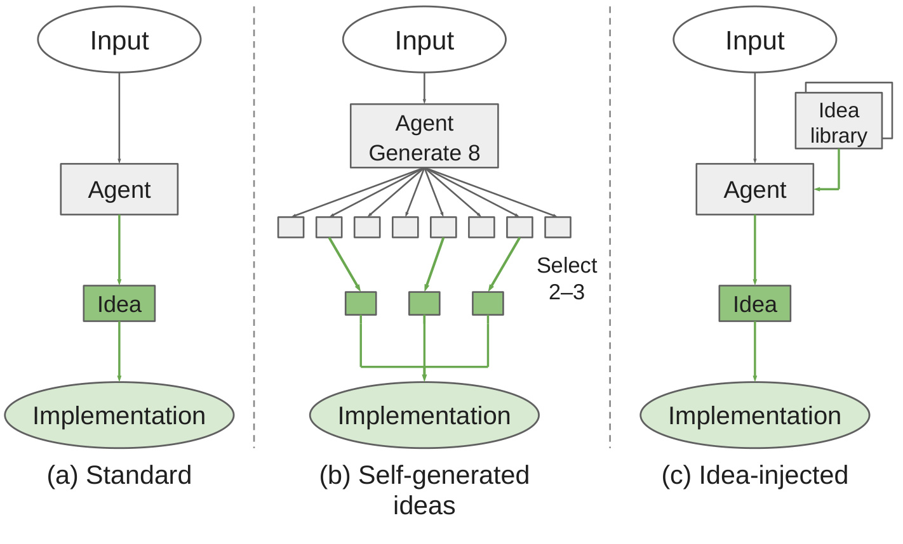
Figure 6 左侧默认模式让 Agent 在通常流程里自行提出想法，中间模式明确每轮先生成八个候选，再冻结二至三个进入实验，右侧模式在开始时提供外部创意库。作者只在 Claude Code 配 DeepSeek V4 Flash 上做这组干预，不能直接外推所有七种组合。创意库来自顶会论文与竞赛公开方案，覆盖架构、数据处理、训练及推理，给 Agent 的是提炼后的方向文本，而非在实验期间开放网页搜索。
图中最重要的对照不是“有计划”和“没计划”，而是可用知识的来源。自生成模式仍只能使用任务、当前代码、公开训练验证输入与本次实验记忆，附录明确禁止检索论文、外部知识库与历史经验卡；创意注入则有意补入这些预先整理的外部方向。这个条件差异本身就是实验的一部分。结果可以支持“相关外部指导有帮助”，却不能直接证明同等知识和上下文预算下，Agent 无法提出相同想法。创意库制作与筛选的人工成本也不在十二小时执行预算中，评估研发总成本时需要另记。
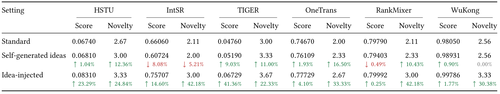
Table 3 的基准是默认 Agent 方案，箭头不是相对最初推荐模型。创意注入在六任务均超过默认与显式自生成方案，作者给出平均分数相对默认提高百分之十四点二三、相对自生成提高百分之十三点三五；创新评分分别增加零点七六和零点五八。HSTU 从零点零六七四到零点零八三一，TIGER 从零点零四七六到零点零六七二九，是较明显的原始分数变化；RankMixer 则仅从零点七九七九到零点七九九九二，表列相对百分之零点二五。全任务正增益不等于每任务收益幅度相近。
显式自生成八选二三没有稳定获益，IntSR 从零点六六零六降到零点六零七二四，表列负百分之八点零八；RankMixer 也略降。更多候选和选择步骤可能继续围绕相似的低价值方向，计划的形式完整并不确保假设切中瓶颈。表内把创新分也写成相对百分比，但零到四序数尺度的比例没有自然能力含义，解释时用原始等级变化更稳妥。这组干预说明执行能力可以接住部分外部指导，不足以证明实现已不是任何条件下的瓶颈，也没有在线实验把离线提升转换为业务效果。
3.5 附录中的策略差异与案例审计
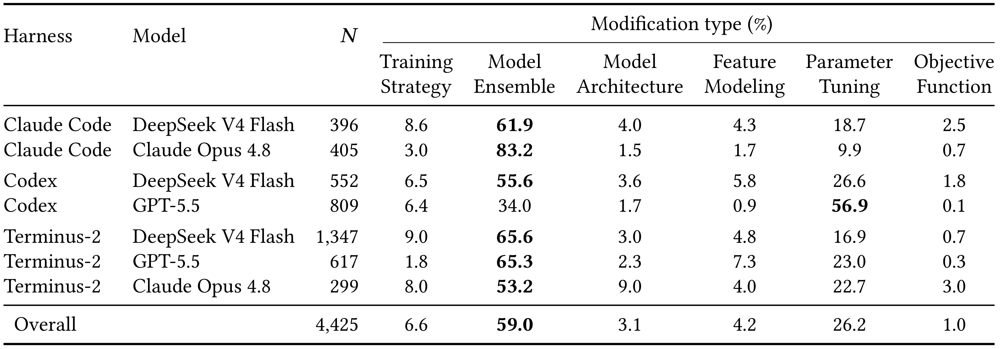
Table 4 将全局饼图拆到七种组合，$N$ 是跨任务与运行汇总的分类动作数。例如 Codex 配 GPT 有八百零九条，参数调整占百分之五十六点九；Claude 原生框架配 Claude 有四百零五条，集成占百分之八十三点二；Terminus 配 DeepSeek 有一千三百四十七条，是该表最大计数。相同十二小时并不意味着这些行有相同实验数，池化后的总比例也会更受高计数组合影响，不能把总体平均当成“平均每个 Agent 的策略分布”。
比较同模型不同框架，可见框架不仅影响最终分数，也改变搜索风格：有的更常调超参数，有的更常做集成。所有组合工程类别仍超过八成，支持作者对共同倾向的观察；但表没有逐类最终收益，不能据此判断哪种偏好最有效。每行百分比因四舍五入可能不严格加到一百，正文的四千四百二十五条“实验”与附录“分类修改动作”用词亦有差别。本笔记按可追溯的分类记录理解分母，不把它等同于四千四百二十五次完全独立训练或四千四百二十五项科学发现。
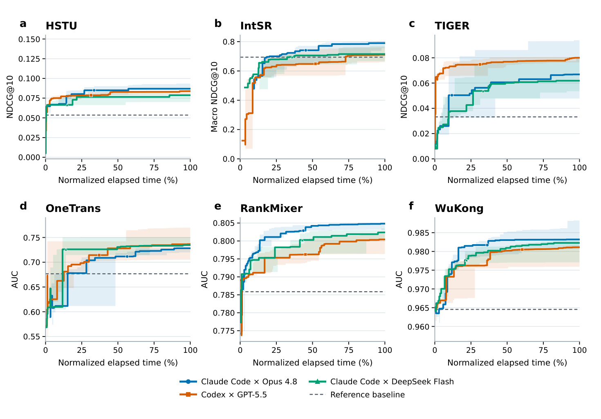
Figure 7 扩展 Figure 3，增加 HSTU 与 OneTrans，六个面板仍以归一化时间显示三组合验证过程。HSTU 的初期跳升和后期平台、OneTrans 较宽的早期阴影，都说明不同任务的收益形成路径不一样。每个纵轴范围单独设置，所以看起来类似的上升斜率并不代表相同绝对改进；不同任务也不能只按图上曲线高度排序。它补足主文四任务选择的覆盖，但仍只包含三种代表组合，而不是完整七组合的全部运行轨迹。
附录的两项案例进一步限定“创新带来收益”的解释。HSTU 把七百六十八维内容特征标准化并投影到共享物品 ID 空间，既用于序列输入也用于全物品打分，最终进入集成；内容融合验证分零点零七八八七七高于无融合零点零六八零八零，但两运行的早停耐心分别为二十和二十五，并非完全只变内容输入。另加残差前馈模块后，验证分由零点零八零一四九降至零点零七八八七七，成对用户 bootstrap 差值置信区间跨零，未显示明确增益。
IntSR 案例针对训练仅四负例、评估九十九负例的差距扩展训练候选，使用批内正物品并屏蔽目标重复及历史负例。批大小一百二十八时新增一百二十四槽由批内物品填满，虽然实现了流行度回退，完整批实际无需调用。该模型进入最终集成，但作者未隔离测量这项机制的最终测试贡献。这两例共同说明，有效方向往往是补入被忽视的信息或修复具体训练比较条件，增加结构复杂度本身不能替代受控验证。
4. 总结
AutoRSE 最有用的地方，是同时保存“最终改好了多少”和“研究过程中实际做了什么”。六任务、隐藏测试、固定硬件与预算让跨 Agent 比较更明确，轨迹切分、分类和最终代码评分又避免把一次指标提高直接等同于科学创新。其结果支持当前 Agent 已能完成不少推荐工程优化，也显示默认研究倾向于集成和调参；外部方向的适配可以进一步提高分数。这里的能力边界落在本文给定的模型版本、执行框架、数据与初始实现上，不是对所有未来 Agent 的永久判断。
对推荐研发，较容易迁移的是实验制度：固定可用数据和隐藏验收，保留最优有效提交，记录每次假设、改动、验证反馈和去留决策。分类可以帮助发现长时间没有探索的方向，但不应该强迫每一轮追求结构新奇。若瓶颈在训练样本和目标定义，反复改层数可能只增加成本；若已有基线配方欠充分，合理调参可能就是最划算的工作。评价时应把验证收益、最终测试收益、计算代价和服务复杂度一起列出。
对大模型与 Agent 研究，文章提示应将知识供给、想法选择、代码实现和实验执行分别设计对照。想法库有效，并不表示只要给更长提示就能稳定创新；它也可能通过补齐模型预训练知识缺口或直接揭示数据中的有效特征而起作用。附录要求创新评审只看生效代码，不看测试分数，值得作为防止漂亮叙述替代证据的规则；但仍需要人工审查和更稳定的评审一致性。
需要保留至少四类局限。第一，工业级骨干在公开数据上的复现与完整工业链路不同，尤其社区迁移和 IntSR 尽力复现会改变剩余可优化空间。第二，六任务跨指标相对平均并不具有统一业务量纲，百分之十六点一不是线上收益承诺。第三，三次重复仍不足以充分估计高方差研究流程的可靠性，论文也未给每个结论的显著性检验。第四，策略和创新标注依赖 LLM，评分相对基线而非文献原创，零到四级序数的均值与比例需要谨慎。第五，固定十二小时未统一 API 费用、最终服务开销或创意库制作成本；第六，相关性和外部指导干预仍不能排除任务适配、信息新增与训练配方等混杂因素。
另需注意最终方案评分与尝试分布服务不同目的。一个 Agent 可以尝试大量常规实验后留下相对新颖的方案，也可以探索过架构却最终回到集成；仅凭总体饼图不能断定每次最终提交的机制。复现时应沿最终预测命令追溯生效改动，并将放弃方向保留在研究日志中，避免把努力程度与最终证据混在一起。
后续可以沿三条明确路线复验。先固定一个推荐任务，把语言模型和执行框架交叉比较，并同时记总费用、有效实验数、测试波动与最终延迟，确认框架收益来自哪里。再为同一想法建立简短、等信息量指导与纯自生成对照，把外部知识、生成数量和选择机制分开。最后对最终代码与分类轨迹做人工盲审，复核隐藏测试隔离、真实生效机制和创新等级一致性，同时保留 IntSR 负迁移、残差模块无显著增益等失败证据。这样才能判断系统是在更快地执行工程搜索，还是开始形成可复用的研究判断。